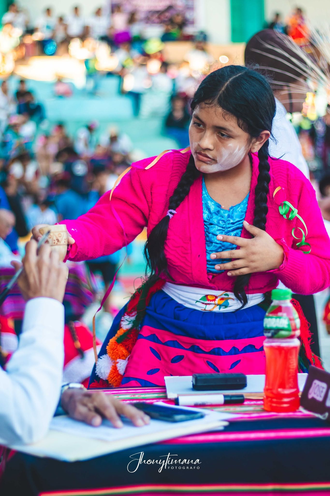

Concurso Nacional
Catacaos, Color y Tradición
Desde 2017 organizamos uno de los encuentros folklóricos más representativos del norte del Perú, reuniendo agrupaciones de diferentes regiones para celebrar la riqueza de nuestras tradiciones.
Más que un concurso, es un espacio de intercambio, convivencia y difusión cultural que fortalece el turismo, la identidad y el desarrollo artístico de nuestra comunidad.
Conocer el proyecto →